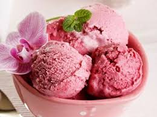

Para trqabalhar com imagens na sua pagina vamos utilizar a tag <img> e o atributo "src", onde colocaremos o endereço da imagem dentro das aspas.
Estas imagens podem estar ospedadas em uma página da web, ou no seu próprio computador.
Para trqabalhar com imagens da web precisamos copiar exatamente o endereço de onde ela se encontra e colocar dentro dos parenteses no atributo "src" dentro da tag <img>.
Devemos também colocar o atributo "alt", que é um texto alternativo para que se por algum motivo o navegador não carrega a imagem ele exibirá este texto.

Para trabalhar com imagens no computador preicsamos indicar o endereço de onde ela se encontra no seu computador. Para localizar a imagem no computador, o VS nos ajuda, basta que colocamos o cursor no meio dos parênteses e precionemos as teclar Control + barra de espaço, e ao selecionar a imagem ele já coloca o endereço de onde ela esta.
Devemos também colocar o atributo "alt", que é um texto alternativo para que se por algum motivo o navegador não carrega a imagem ele exibirá este texto.
